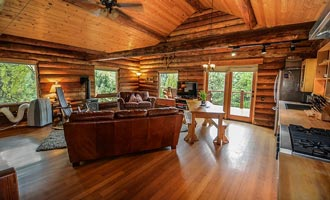

Runmark stugby
Bo i stugbyn
Stugbyn har utöver sina stugor också en campingplats som ligger i direkt anslutning till gården. Området är familjevänligt och barnen kan springa fritt, platsen där ni skall vara försiktiga med att släppa in barn är bland korna. Här finns möjlighet till att bara njuta av tillvaron och hyra en rodbåt. Om du vill använda tiden mer effektivt kan du ställa upp och jobba på gården. Då får ni tillbaka 49,- per dag för boendet.
Detta kan du göra här
- Klappa kor, getter och katter
- Fika i butiken
- Arbeta med lättare arbeten som lämpar sig bra för barn, exempel är jordgubbsplockning eller utfodring av djuren
- Ro med en av båtarna
- Spela minigolf
- Vara med i Bondeklubben (gratis)
- Träffa nya kompisar och hoppa i hö
Två bäddar
Stugorna finns med enkel och dubbelbäddar där lakan ingår. Det finns kök och toalett och en kamin för att elda vid behov.
399,-

Familjestuga
Det finns tre sovrum, två med våningsängar och ett med dubbelsäng. Lakan finns i stugan
499,-


Husvagn/husbil
Platserna är inklusive el men kan också väljas bort. Campingen ligger i direkt anslutning till gården.
149,-